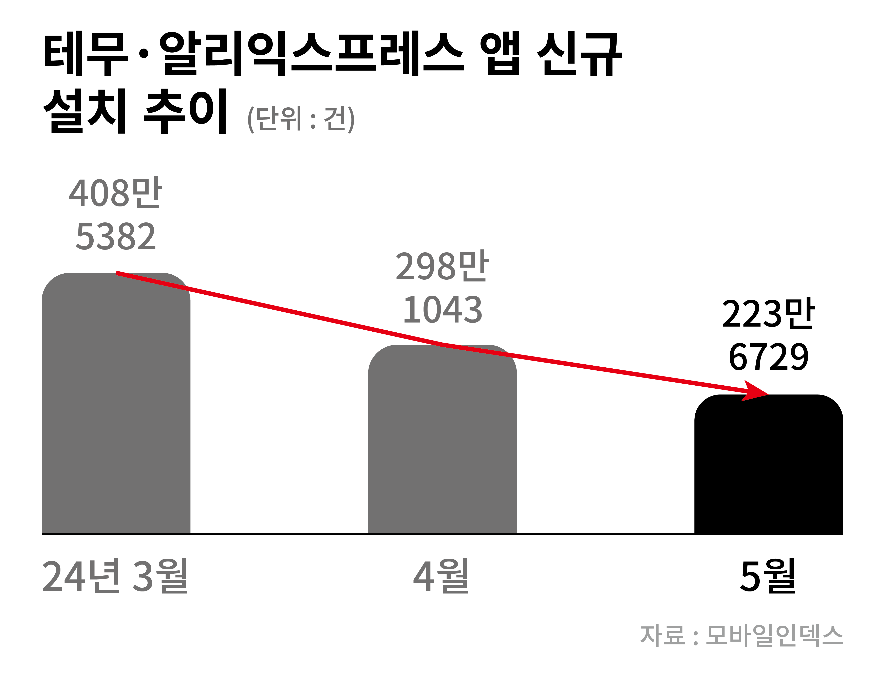
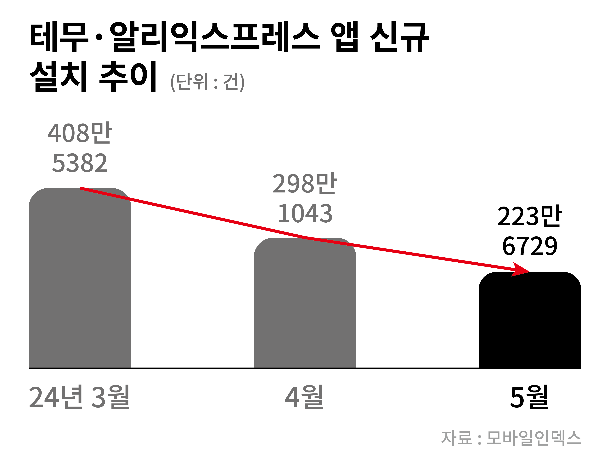

내가 받은 해외직구 상품,
알고보니 유해물질 범벅이었다고?
관세청이 2024년 4월 5일과 30일에 걸쳐 최근 이용자가 급증하고 있는 중국 해외직구
플랫폼(알리익스프레스, 테무)에서 판매중인 초저가 장신구 제품과
어린이 제품에서 발암물질을 포함한 유해물질이 검출되었다는 사실을 밝혔다.
초저가 장신구 제품(귀걸이, 반지 등)
404점을 분석한 결과, 그중 96점의
제품에서 국내 안전 기준치를
초과하는 카드 뮴, 납 등의 발암물질이
검출되었으며, 국내 안전 기준치보다
최대 700배에 달하는 성분이
검출되었음을 밝혔다.
초저가 어린이제품 252종을 분석한
결과, 그중 38종(약 15%)의 제품에서
카드뮴, 납, 가소제 등의 유해물질이
검출되었으며 국내 안전 기준치를
최대 3,026배 초과하는 유해 성분까지도
검출되었다 밝혔다.

▶ 그렇다면, 저런 중국의 해외직구플랫폼(C-커머스)들이 국내에 자리잡을 수 있었던 이유가 뭘까?
*C-커머스란, 중국(China) + e-commerce의 합성어로 중국의 이커머스 플랫폼을 뜻함
‘세계의 공장’인 중국에서 대부분의 상품이
‘개인 직구’로 오기 때문에, 소비자가
상품을 구매하면 중국 현지 물류센터에서
한국으로 바로 상품을 배송해준다.
즉, 이 덕분에 C-커머스 업체들은 관세를
포함한 각종 세금을 피할 수 있다.
또한 국내법상 개인의 사용 목적으로
해외에서 일 150달러 미만으로 상품을
구매할 경우,통관 목록만 제출하면
관세를 면제받을 수 있다.
하지만, 한국 커머스 내 판매자들은
상품을 수입할 때 상품가의 8% 수준의
관세를 낸다. 또한 여기에 부가세를
더하면 10%를 추가로 물게 되는데,
즉, 한국 판매자의 상품가는 중국 직구
상품가에 비해 최소 20% 가까이 오르게
되기 때문에 가격 경쟁이 어려워진다.
심지어 한국에서 전기용품, 생활용품,
어린이 제품 등을 판매할 때는 필수로
KC 인증을 받아야 한다.
그렇다보니, 국내 판매자들이 해외
상품을 수입해 KC 인증을 획득할 경우
상품당 수십만원에서 최대 수백만원의
비용이 발생하게 된다.
하지만 해외직구인 경우에는 KC 인증이
없어도 되기에 비용이 절감되는 것이다.
이런 C-커머스에 대응하기 위한 관세청의 대처
알아보기 ⇲
how
개인직구로 인한 싼 가격과 이전에 알던 직구와는
달리 빠른 배송 때문 But, 유해물질 검출 이후 신규 설치수가 줄어들었음 
달리 빠른 배송 때문 But, 유해물질 검출 이후 신규 설치수가 줄어들었음 